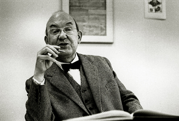

Art
Artists
Frida Kahlo
Frida Kahlo, à Revolução! by Cintia Barenho
"I don't paint dreams or nightmares, I paint my own reality."
—Frida Kahlo, Operah Daily
Salvador Dalí
Jean-Michel Basquiat
Design
Designers
David Carson
David Carson – Never Snap to Guides by Andreas Dantz
"Graphic design will save the world right after rock and roll does."
—David Carson, AZ Quotes
Neville Brody
Susan Kare
Engineering
Engineers
Håkon Wium Lie
Håkon Wium Lie by Martin Bekkelund
"In the near future, the web is going to be the master copy of human knowledge. We need to figure out ways to use that knowledge."
—Håkon Wium Lie, LIBQuotes
Linus Torvalds
Tim Berners-Lee
Typography
Typographers
Jan Tschichold
Jan Tschichold (1963) by Erling Mandelmann
"White space is to be regarded as an active element, not a passive background."
—Jan Tschichold, AZ Quotes